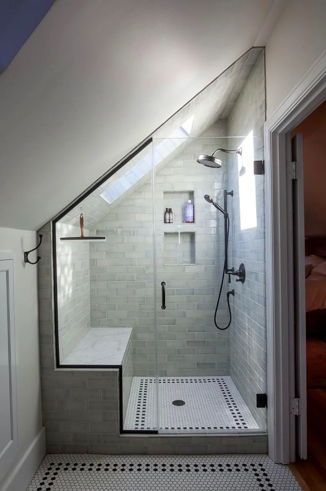
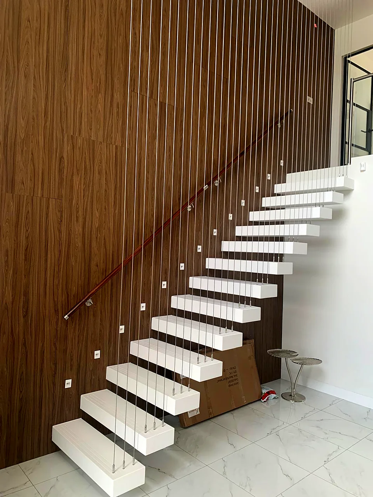
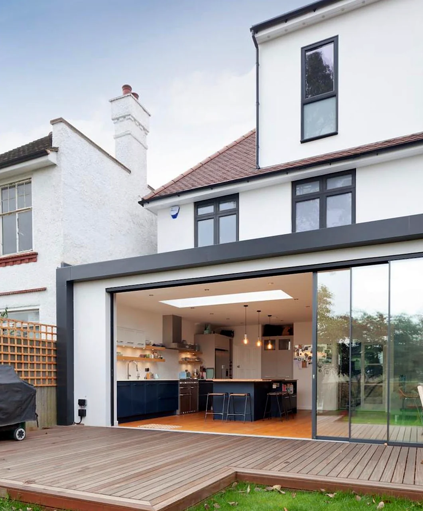

Capabilities
Construction services
Choose a service to explore the scope, planning questions and information to share for a quote.

New-build houses
From an empty plot to a finished home
Explore service →
Loft conversions
Make room under the roof
Explore service →
House extensions
Connect your home to the garden
Explore service →
Complex staircases
Floating, suspended and feature stairs
Explore service →
Garden renovations
Build better outdoor spaces
Explore service →
Kitchen renovations
Plan a kitchen around everyday use
Explore service →
Hotel renovations
Plan the work around your guests
Explore service →
Places of worship
Mosques, churches and prayer spaces
Explore service →
Major construction
Define the package before tender
Explore service →
Commercial refurbishment
Refit premises around business needs
Explore service →
Painting & decorating
Specify a finish that suits the space
Explore service →